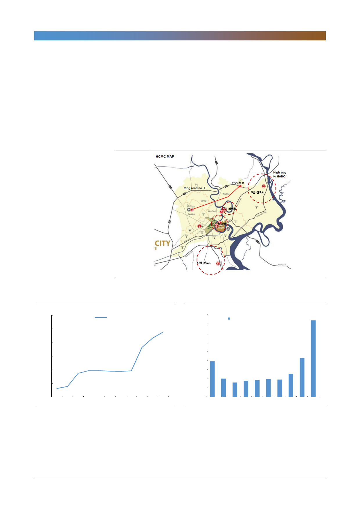

GS건설(006360)
호치민의 주택가격은 2015년부터 오름세다. 중상류층 주택가격의 평균 매매가는
2015년 2,010달러/㎡에서 2017년 2,355달러/㎡로 2008년 고점을 넘어섰다.
2017년 가장 상승폭이 커 30% 이상 상승했고 2018년 1분기에도 추가로 20%
이상 상승한 것으로 추정된다. GS건설이 2012년 완공한 자이리버뷰의 분양가도
2,100~2,300달러/㎡ 였다. 2007년 대비 현재 하노이 지가는 Hoan Kiem군 기
준 2배, 호치민 지가는 2군 기준 5배 상승한 상태다. 즉 GS건설의 베트남 부지
장부가는 총 5,520억원인데 최소 1조원의 가치로 환산된다는 의미다.
[그림 1] GS건설의 베트남 개발 부지
자료: GS건설, 한국투자증권
[그림 2] 호치민 2군 토지 평균 지가
(백만동/㎡)
120
호치민 2군 토지 평균 지가
100
80
60
40
20
2007
2009
자료: CBRE, 한국투자증권
2011
2013
2015
2017
[그림 3] 호치민시 고급 아파트 매매가격 추이
(달러/㎡)
3,300
3,100
호치민 고급 아파트 매매가 (좌)
2,900
2,700
2,500
2,300
2016년,
2008년 고점 회복
2,100
1,900
1,700
1,500
2008
2010
자료: CBRE, 한국투자증권
2012
2014
2016
우리는 ‘베트남을 사자, 신도시를 사자(2016/5/11字)’에서 베트남 부동산 시장
을 전망한 바 있다. 당시는 베트남 부동산 upcycle의 초입기였고 지금은 본격 궤
도에 진입한 상태다. GS건설의 사업여건이 더욱 좋아졌음을 의미한다. 해당 사업
을 부지 별로 update했다.
5